This vignette provides a quick visual overview of
available functions. Use the sidebar to jump to sections of interest.
For complete parameter lists and the many available customization
options, refer to the individual function documentation
(?function_name).
General
Split-Correlation Heatmap
Standard correlation heatmaps are symmetric, displaying identical
information in both triangles. When comparing two
groups, gg_splitcorr() uses this redundancy by
displaying one group’s correlations in the upper triangle and the other
group’s in the lower triangle. The function requires a data frame with
numeric variables and a binary splitting
variable. It computes pairwise correlations for each group,
adjusts p-values for multiple testing within each, and labels only
statistically significant correlations with their values.
# Compare correlations between V-shaped vs straight engines
gg_splitcorr(
data = mtcars,
split = "vs",
prefix = "Engine Type: "
)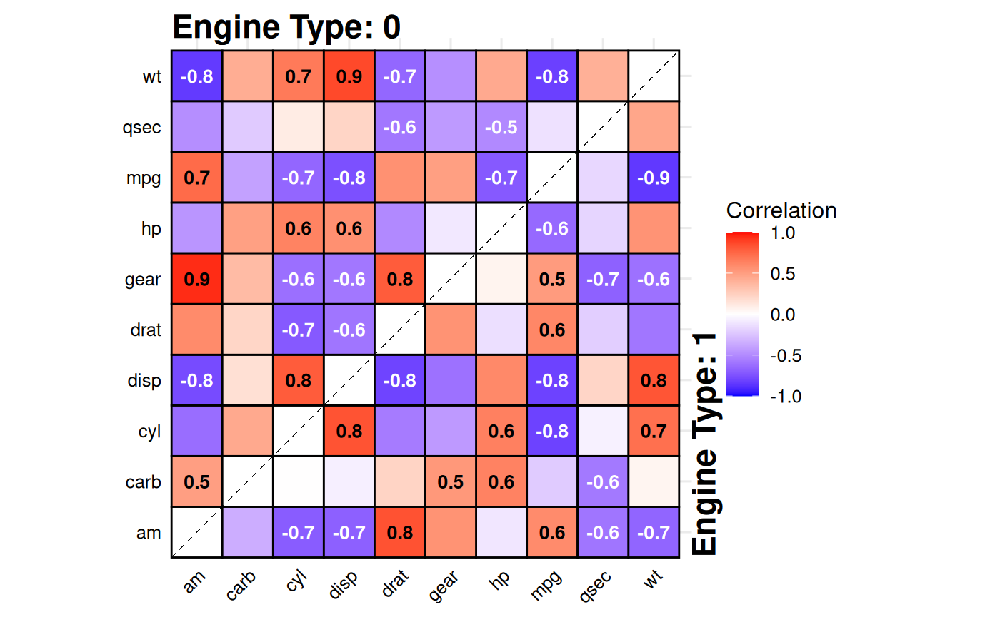
Currently there are two styles to choose from, tile (default) and point.
# Alternative style
gg_splitcorr(
data = mtcars,
split = "vs",
prefix = "Engine Type: ",
style = "point"
)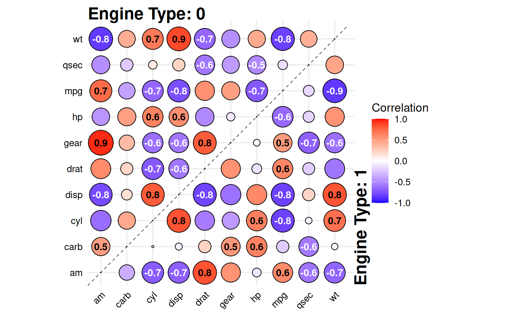
See ?gg_splitcorr for correlation methods, p-value
adjustment options, color schemes, and style customization.
Rank Shift Plots
A frequently encountered task is assessing how the ranking of a set
of samples changes across two conditions. gg_rankshift()
creates a three-panel visualization: side panels
display ranked distributions for each condition, while
the center panel connects corresponding samples with lines colored by
rank change direction. The function requires data with
sample identifiers, a grouping variable containing exactly two
levels, and a numeric value for ranking. Ranks are calculated
using summary statistics (mean or median) controlled by
stat_summary.
# Synthetic data - bacterial strain growth rates
growth_data <- data.frame(
strain = rep(paste0("Strain", 1:13), each = 6),
condition = rep(c("Control", "Treated"), each = 3, times = 13),
growth_rate = c(
rnorm(39, mean = 0.85, sd = 0.12), # Control
rnorm(39, mean = 0.45, sd = 0.10) # Treated
)
)
gg_rankshift(
data = growth_data,
id = "strain",
group = "condition",
value = "growth_rate"
)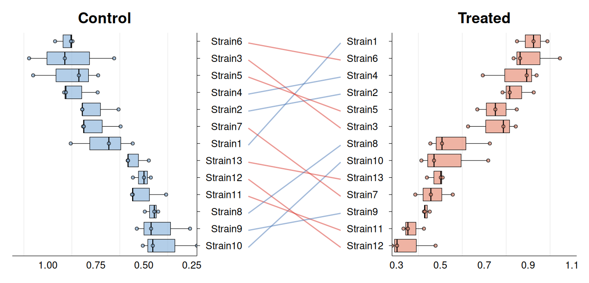
# Alternative style & minor customizations
gg_rankshift(
data = growth_data,
id = "strain",
group = "condition",
value = "growth_rate",
style = "bar",
fill = c("#e41a1c", "#377eb8"),
rank_change_colors = c(
increase = "#1b9e77",
decrease = "#d95f02",
no_change = "#7570b3"
),
panel_ratio = 0.65,
point_size = 2.5,
line_width = 1,
decreasing = TRUE
)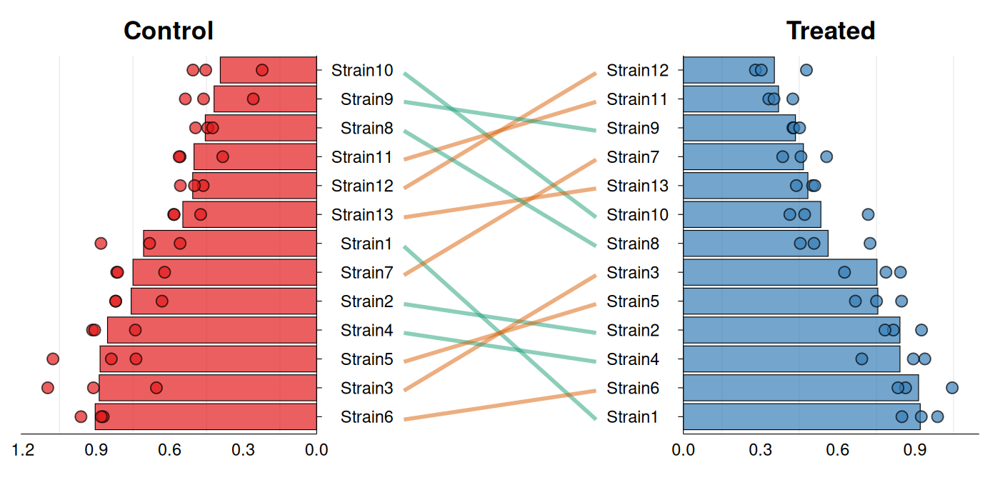
See ?gg_rankshift for options to customize colors,
adjust panel widths, and control point display.
Confusion/Contingency Tables
gg_conf() creates bubble plots where bubble size
represents frequency counts for each unique combination
of two categorical variables. The function
automatically computes these counts from the raw data using
table(). Results can also be facetted when additional
categorical variables are supplied.
data(mtcars)
mtcars$horsepower <-
cut(mtcars$hp, breaks = 5,
labels = c("Very Low", "Low", "Medium", "High", "Very High"))
mtcars$`miles per gallon` <-
cut(mtcars$mpg, breaks = 5,
labels = c("Very Low", "Low", "Medium", "High", "Very High"))
gg_conf(data = mtcars, x = "horsepower", y = "miles per gallon")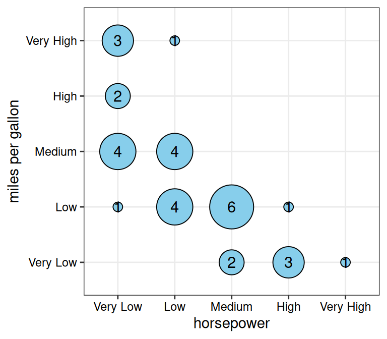
# Custom styling
gg_conf(data = mtcars, x = "horsepower", y = "miles per gallon",
fill = "lightcoral", point_size_range = c(5, 20),
show_grid = FALSE)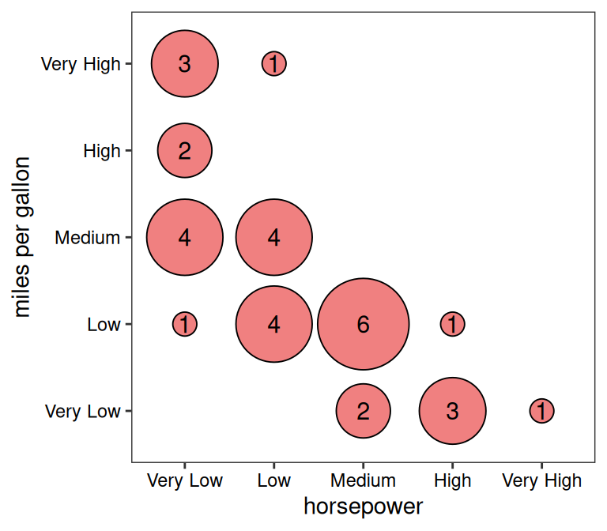
# With faceting by "vs" column
gg_conf(data = mtcars, x = "horsepower", y = "miles per gallon",
fill = "lightcoral", point_size_range = c(5, 20),
facet_x = "vs")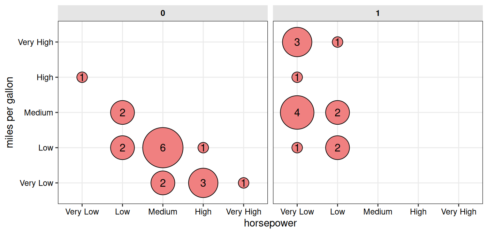
See ?gg_conf for customization of colors, sizes, grid
display, and faceting options.
Criteria Heatmaps
gg_criteria() displays samples against multiple
criteria as a heatmap. Optional barplots can
be added to show continuous metrics. As the vertical alignment between
heatmap and barplot panels depends on the exported figure dimensions,
the function provides recommended sizes based on the
number of candidates and criteria.
# Create example data
# Example: Gene prioritization criteria
gene_data <- data.frame(
gene = c("BRCA1", "TP53", "EGFR", "KRAS", "MYC",
"PTEN", "APC", "CDKN2A", "RB1", "VHL"),
`Missense Variant_crit` = c("Yes", "Yes", "Yes", NA, "Yes",
"Yes", NA, "Yes", NA, "Yes"),
`eQTL_crit` = c("Yes", "Yes", NA, "Yes", "Yes",
"Yes", "Yes", "Yes", "Yes", NA),
`pQTL_crit` = c("Yes", NA, "Yes", "Yes", NA,
"Yes", "Yes", NA, "Yes", "Yes"),
`GWAS Hit_crit` = c("Yes", "Yes", "Yes", "Yes", NA,
"Yes", "Yes", "Yes", NA, NA),
`Loss of Function_crit` = c(NA, "Yes", NA, NA, "Yes",
"Yes", "Yes", NA, "Yes", NA),
`High Conservation_crit` = c("Yes", "Yes", "Yes", "Yes", "Yes",
"Yes", "Yes", "Yes", "Yes", "Yes"),
`mRNA DE_crit` = c("Yes", NA, "Yes", NA, NA,
"Yes", "Yes", "Yes", NA, "Yes"),
`Prot DE_crit` = c(NA, "Yes", NA, NA, NA,
"Yes", NA, NA, NA, "Yes"),
check.names = FALSE
)
# Calculate total criteria met
crit_cols <- grep("_crit$", names(gene_data), value = TRUE)
gene_data$`Total` <- rowSums(gene_data[crit_cols] == "Yes", na.rm = TRUE)
head(gene_data)
#> gene Missense Variant_crit eQTL_crit pQTL_crit GWAS Hit_crit
#> 1 BRCA1 Yes Yes Yes Yes
#> 2 TP53 Yes Yes <NA> Yes
#> 3 EGFR Yes <NA> Yes Yes
#> 4 KRAS <NA> Yes Yes Yes
#> 5 MYC Yes Yes <NA> <NA>
#> 6 PTEN Yes Yes Yes Yes
#> Loss of Function_crit High Conservation_crit mRNA DE_crit Prot DE_crit Total
#> 1 <NA> Yes Yes <NA> 6
#> 2 Yes Yes <NA> Yes 6
#> 3 <NA> Yes Yes <NA> 5
#> 4 <NA> Yes <NA> <NA> 4
#> 5 Yes Yes <NA> <NA> 4
#> 6 Yes Yes Yes Yes 8
# Base criteria plot
gg_criteria(
data = gene_data,
id = "gene",
criteria = "_crit$",
show_text = FALSE
)
#> Recommended dimensions: 5.2 x 5.5 inches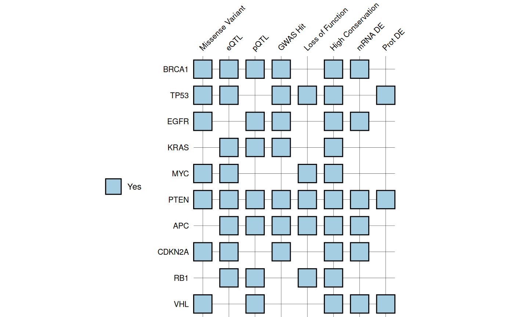
# With added barplot
gg_criteria(
data = gene_data,
id = "gene",
criteria = "_crit$",
bar_column = "Total",
show_text = FALSE,
tile_fill = c(Yes = "#A6CEE3", No = "white"),
bar_fill = "#A6CEE3",
panel_ratio = 0.7
)
#> Recommended dimensions: 7.2 x 5.5 inches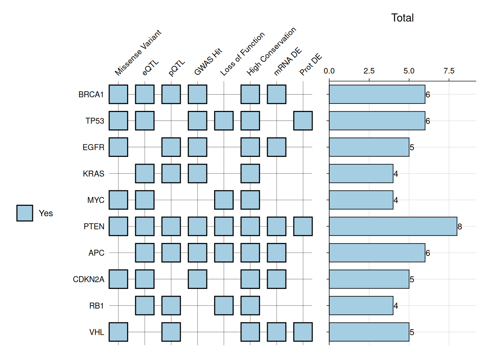
Criterion values can be displayed as text labels on tiles.
# Example: VHH Variant Analysis
# Define amino acid chemistry colors
aa_colors <- c(
"D" = "#E60A0A", "E" = "#E60A0A", # Acidic (red)
"K" = "#145AFF", "R" = "#145AFF", # Basic (blue)
"H" = "#8282D2", # Histidine (purple)
"S" = "#FA9600", "T" = "#FA9600", # Polar uncharged (orange)
"N" = "#00DCDC", "Q" = "#00DCDC", # Polar amides (cyan)
"C" = "#E6E600", # Cysteine (yellow)
"G" = "#EBEBEB", # Glycine (light gray)
"P" = "#DC9682", # Proline (tan)
"A" = "#C8C8C8", # Alanine (gray)
"V" = "#0F820F", "I" = "#0F820F", # Hydrophobic (green)
"L" = "#0F820F", "M" = "#0F820F",
"F" = "#3232AA", "W" = "#B45AB4", # Aromatic (dark blue/purple)
"Y" = "#3232AA"
)
vhh_variants <- data.frame(
variant = c("WT", "Mut1", "Mut2", "Mut3", "Mut4", "Mut7", "Mut5",
"Mut6", "Mut8", "Mut9", "Mut10", "Mut11"),
Q5_mut = c(NA, "H", NA, NA, NA, NA, "H", "H", "H", "D", NA, "H"),
S55_mut = c(NA, NA, "P", NA, NA, "P", "P", NA, "P", "P", NA, NA),
N73_mut = c(NA, NA, NA, "E", NA, NA, NA, "E", "E", NA, "E", NA),
K80_mut = c(NA, "L", NA, NA, "S", "V", NA, NA, NA, "L", "S", NA),
F99_mut = c(NA, NA, "L", NA, NA, NA, NA, NA, NA, "W", NA, "W"),
KD_nM = c(45, 18, 5.2, 38, 42, 20, 3.8, 15, 3.2, 4.5, 40, 22),
yield_mg_L = c(12, 11.8, 10, 13, 11, 10, 10, 12, 10, 7.8, 12.5, 8.5),
Tm_C = c(68.5, 67.8, 68, 72.3, 35, 66, 67.5, 70, 70.5, 72, 38, 74)
)
# Create plot
gg_criteria(
data = vhh_variants,
id = "variant",
criteria = "_mut$",
tile_fill = aa_colors,
bar_column = c("KD_nM", "yield_mg_L", "Tm_C"),
panel_ratio = 2,
tile_width = 0.70,
tile_height = 0.70,
show_text = TRUE,
border_color = "grey40",
border_width = 0.4,
text_size = 10,
show_legend = FALSE
)
#> Recommended dimensions: 10.0 x 5.9 inches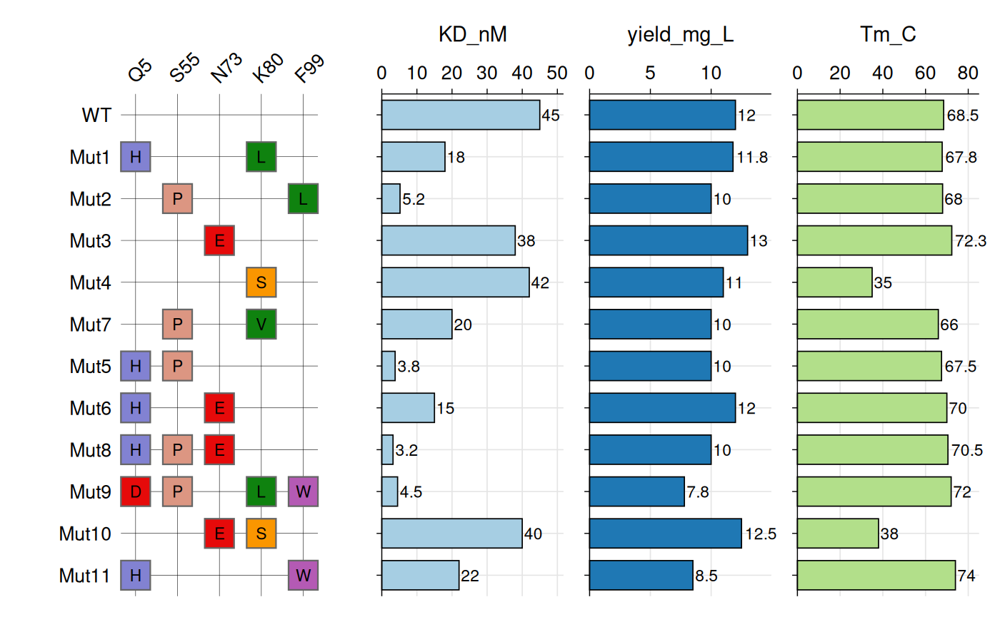
See ?gg_criteria for tile customization, border styling,
and multi-barplot options.
Bioinformatics
Genotype Heatmaps
Genotype data typically consist of biallelic markers
such as SNPs, where each individual carries two alleles at each locus.
gg_geno() provides a specialized visualization for these
data, sharing the core design and features of
gg_criteria() but adapted for diploid genotypes. Each tile
is split diagonally to represent both alleles
simultaneously, with samples occupying rows and genetic markers
occupying columns.
The function accepts data in wide format with genotype columns
identified by a regular expression pattern. Genotypes must be encoded as
“allele1/allele2” for unphased data or “allele1|allele2”
for phased data. The function automatically detects
phasing based on the separator and visually
distinguishes the two cases using border colors: black borders indicate
phased genotypes, while white borders indicate unphased genotypes. The
top-left triangle displays the first allele, and the bottom-right
triangle displays the second allele.
Like gg_criteria(), the function supports horizontal
barplots via bar_column to display continuous
variables alongside genotypes.
# Create example SNP and phenotype data
set.seed(123)
snp_data <- data.frame(
id = paste0("P", sprintf("%03d", 1:12)),
# SNP columns
rs1234_geno = sample(c(c("0/0", "0/1", "1/1"), NA),
12, replace = TRUE,
prob = c(0.4, 0.4, 0.15, 0.05)),
rs5678_geno = sample(c("0/0", "0/1", "0/2", "1/1", "1/2", "2/2", NA),
12, replace = TRUE,
prob = c(0.25, 0.25, 0.1, 0.15, 0.15, 0.05, 0.05)),
rs9012_geno = sample(c(c("0|0", "0|1", "1|1", "0/1", "1/2"), NA),
12, replace = TRUE,
prob = c(0.2, 0.2, 0.15, 0.2, 0.15, 0.1)),
rs3456_geno = sample(c(c("0/0", "0/1", "1/1"), NA),
12, replace = TRUE,
prob = c(0.45, 0.35, 0.15, 0.05)),
rs7890_geno = sample(c("0/0", "0/1", "0/2", "1/3", "2/2", NA),
12, replace = TRUE,
prob = c(0.3, 0.25, 0.15, 0.1, 0.15, 0.05)),
rs2468_geno = sample(c("0|0", "0|1", "1|1", "1|2", NA),
12, replace = TRUE,
prob = c(0.3, 0.35, 0.2, 0.1, 0.05)),
# Phenotype columns for bar plots
Age = sample(25:75, 12, replace = TRUE),
BMI = round(rnorm(12, mean = 26, sd = 4), 1),
Insulin = round(rnorm(12, mean = 12, sd = 3), 1)
)
head(snp_data)
#> id rs1234_geno rs5678_geno rs9012_geno rs3456_geno rs7890_geno rs2468_geno
#> 1 P001 0/0 1/2 1|1 0/1 0/0 1|1
#> 2 P002 0/1 1/1 1|1 0/0 1/3 0|1
#> 3 P003 0/1 0/1 0/1 0/0 0/0 0|0
#> 4 P004 1/1 0/2 0/1 0/0 0/1 0|1
#> 5 P005 1/1 0/1 0|1 0/0 2/2 1|1
#> 6 P006 0/0 0/1 0|0 0/0 0/0 0|0
#> Age BMI Insulin
#> 1 39 34.7 16.5
#> 2 65 30.8 7.4
#> 3 71 21.5 13.8
#> 4 50 24.4 12.4
#> 5 55 24.1 12.6
#> 6 40 29.1 13.1
# Base genotype plot
gg_geno(
data = snp_data,
id = "id",
geno = "_geno$"
)
#> Recommended dimensions: 4.4 x 6.3 inches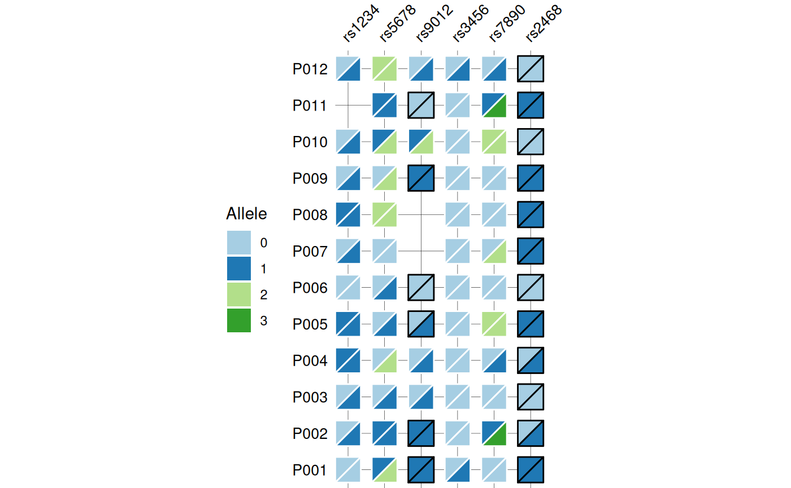
# Show optional barplots
gg_geno(
data = snp_data,
id = "id",
geno = "_geno$",
show_legend = TRUE,
panel_ratio = 1,
bar_column = c("Age", "BMI", "Insulin"),
bar_fill = c("#c77d77", "#e0b46e", "#c7bc77"),
text_size = 10
)
#> Recommended dimensions: 10.4 x 6.3 inches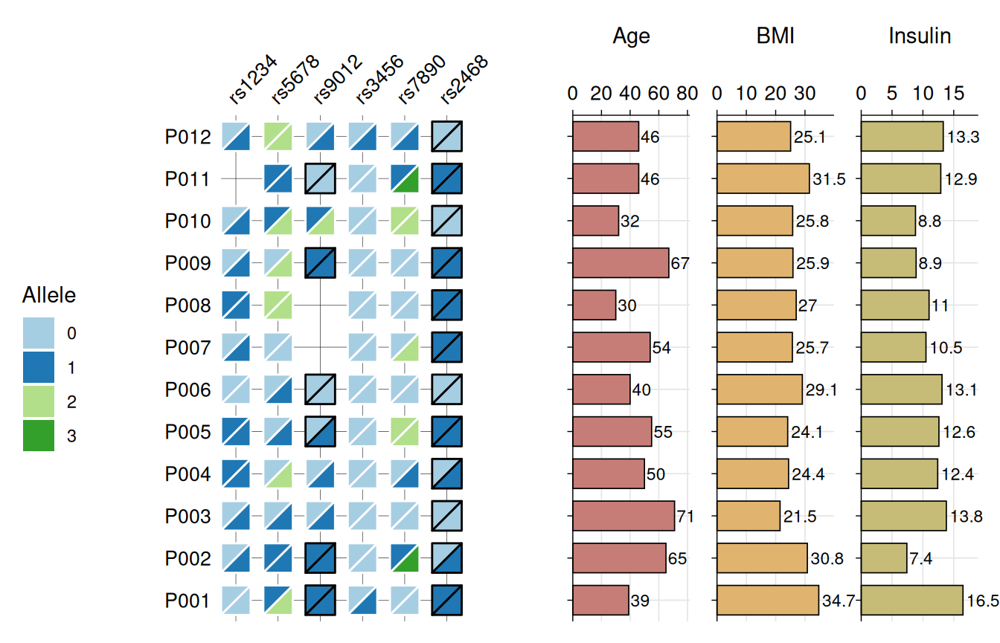
See ?gg_geno for allele color customization, tile
sizing, and barplot styling.
Sequence Coverage
gg_seq() displays substrings of a
reference sequence, with each unique sequence shown as a row at its
aligned position. Useful for visualizing peptide mapping coverage, or
any analysis where you need to show which parts of a reference sequence
are covered by shorter sequences. Supports character
coloring and region highlighting (e.g. tags,
binding sites, CDRs).
# Create synthetic example of peptide mapping data
# Reference sequence
ref_seq <- paste0(
"QVQLVESGGGLVQAGGSLRLSCAASGFTFSSYAMGWFRQAPGKEREFVAAINSGGST",
"YYPDSVKGRFTISRDNAKNTVYLQMNSLKPEDTAVYYCAADLRGTTVNNYWGQGTQV",
"TVSSEQKLISEEDL"
)
# Peptides with RT and intensity
df_peptides <- data.frame(
id = c("Pep_1004", "Pep_1010", "Pep_1007", "Pep_1011",
"Pep_1009", "Pep_1005", "Pep_1013", "Pep_1003",
"Pep_1001", "Pep_1012", "Pep_1006", "Pep_1008",
"Pep_1002"),
sequence = c(
"QAPGKER",
"GRFTISR",
"GTTVNNYWGQGTQVTVSSEQKLISEEDL",
"GRFTISRDNAKNTVYLQMNSLK",
"EREFVAAINSGGSTYYPDSVK",
"QAPGKEREFVAAINSGGSTYYPDSVKGR",
"NTVYLQMNSLKPEDTAVYYCAADLR",
"LSCAASGFTFSSYAMGWFRQAPGKER",
"QVQLVESGGGLVQAGGSLR",
"PEDTAVYYCAADLRGTTVNNYWGQGTQVTVSSEQKLISEEDL",
"FTISRDNAKNTVYLQMNSLKPEDTAVYYCAADLR",
"LSCAASGFTFSSYAMGWFRQAPGK",
"LSCAASGFTFSSYAMGWFR"
),
rt_min = c(10, 28.5, 34.4, 34.4, 36, 36.5, 40.8,
42.5, 42.8, 43.3, 44.1, 44.8, 46.7),
intensity = c(2769840, 2248170, 2172370, 1698280, 2202810,
983267, 659246, 1064906, 1988932, 1438544,
639990, 1017811, 1112824),
stringsAsFactors = FALSE
)
head(df_peptides)
#> id sequence rt_min intensity
#> 1 Pep_1004 QAPGKER 10.0 2769840
#> 2 Pep_1010 GRFTISR 28.5 2248170
#> 3 Pep_1007 GTTVNNYWGQGTQVTVSSEQKLISEEDL 34.4 2172370
#> 4 Pep_1011 GRFTISRDNAKNTVYLQMNSLK 34.4 1698280
#> 5 Pep_1009 EREFVAAINSGGSTYYPDSVK 36.0 2202810
#> 6 Pep_1005 QAPGKEREFVAAINSGGSTYYPDSVKGR 36.5 983267
# Base coverage map
gg_seq(data = df_peptides, ref = ref_seq, wrap = 70)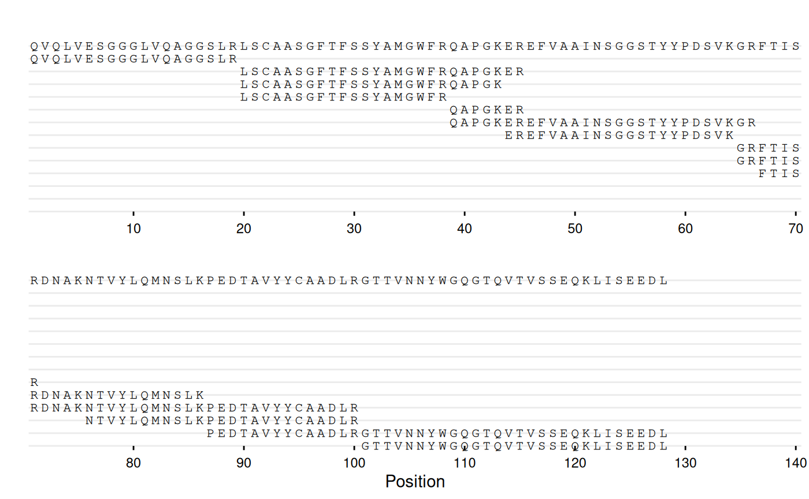
# With peptide IDs and residue coloring
gg_seq(
data = df_peptides,
ref = ref_seq,
name = "id",
color = c(C = "red", K = "blue", R = "#468c2d"),
highlight = list(
"#ffb4b4" = c(27:33, 51:57, 96:107),
"#70bcfa" = c(1, 43, 64, 75, 86)
),
wrap = 70
)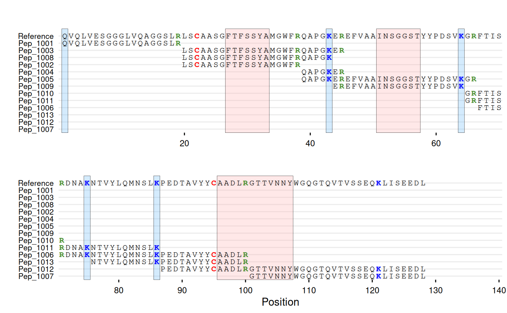
# With annotations
gg_seq(
data = df_peptides,
ref = ref_seq,
name = "id",
color = c(C = "red", K = "blue", R = "#468c2d"),
highlight = list(
"#ffb4b4" = c(27:33, 51:57, 96:107), # CDR regions
"#70bcfa" = c(1, 43, 64, 75, 86), # Lysines
"#d68718" = c(105:106), # Liability site
"#94d104" = c(119:128) # c-Myc tag
),
annotate = list(
list(label = "CDR1", pos = 30),
list(label = "CDR2", pos = 54),
list(label = "CDR3", pos = 101),
list(label = "N-term", pos = 1, angle = 90, vjust = 1),
list(label = "K43", pos = 43, angle = 90),
list(label = "K64", pos = 64, angle = 90),
list(label = "K75", pos = 75, angle = 90),
list(label = "K86", pos = 86, angle = 90),
list(label = "Liability", pos = 106, angle = 90),
list(label = "c-Myc tag", pos = 124)
),
annotate_defaults = list(face = "bold"),
wrap = 80
)
See ?gg_seq for residue coloring, region highlighting,
annotation options, and wrapping control.
Sequence Differences
For sequence variant analysis, a common approach is displaying only
substituted positions to reduce visual noise (e.g., Jalview’s “Show
Differences from Reference” option or MSA viewers with consensus
masking). gg_seqdiff() displays only
positions that differ from the reference, with
matching positions hidden. Only substituted characters are displayed,
making mutations immediately visible. The function can also parse
Clustal alignment files directly using the
clustal argument. gg_seqdiff() supports the
same customization options as gg_seq().
# -----------------------------------------------------------------------
# Example with Clustal alignment file
# -----------------------------------------------------------------------
# Create a temporary Clustal file
clustal_file <- tempfile(fileext = ".aln")
writeLines(c(
"CLUSTAL W (1.83) multiple sequence alignment",
"",
"WT EQKLISEEDLMKTAYIAKQRQISFVKSHFSRQLERIEKKIEAHFDDLHP",
"Mutant1 EQKLISEEDLMKTAYIAKQRQISFVKSHFSRQLERIEKKIEAHFDDLHP",
"Mutant2 EQKLISEEDLMKTAYIAKQRQRSFVKSHFSRQLERIEKKWEAHFDDLHP",
"Mutant3 EQKLISEEDLMKTAYIAKQRQISFVKSHFSRQLER----IEAHFDDLHP",
"Mutant4 EQKLISEEDLMKTAYIAKQRQISFVKSHFSRQAERIEKKIEAHFDDLHP",
"Mutant5 EQKLISEEDLAKTAYIAKQRQISFVKSHFSRQLERIEKKIEAHFDDRHP",
"Mutant6 EQKLISEEDLMKTAYIAKQRQISFVKSHFSRQLERIEKKIEAHFDDLHP",
" *********** ***************** * ******* *******:**",
"",
"WT DIVALSGHTFGKTHGAGKQSSHHHHHH",
"Mutant1 DIVALSGHTFGKTHGAGKQSSHHHHHH",
"Mutant2 DIVALSGHTFGKTHGAGKQSSHHHHHH",
"Mutant3 DIVALSGHTFGKTHGAGKQSS------",
"Mutant4 DIVALSGHTFGKTHGAGKQSSHHHHHH",
"Mutant5 DIVALSGHTFGKTHGAGKQSSHHHHHH",
"Mutant6 DRVALSGHTFAKTHGAGKQSS------",
" * ******** ********** "
), clustal_file)
# Plot Clustal alignment
gg_seqdiff(
clustal = clustal_file,
ref = paste0("EQKLISEEDLMKTAYIAKQRQISFVKSHFSRQLERIEKKIEAHFDDLHP",
"DIVALSGHTFGKTHGAGKQSSHHHHHH"),
color = c(K = "#285bb8", R = "#285bb8", # Basic
E = "#a12b20", D = "#a12b20", # Acidic
W = "#9b59b6", F = "#9b59b6", # Aromatic
H = "#f39c12"), # Histidine
highlight = list(
"#94d104" = 1:10, # N-terminal c-Myc tag
"#FFE0B2" = 30:45, # Active site
"#94d104" = 72:77 # C-terminal His-tag
),
annotate = list(
list(label = "c-Myc", pos = 5),
list(label = "Active site", pos = 37),
list(label = "6xHis", pos = 74)
),
wrap = 60
)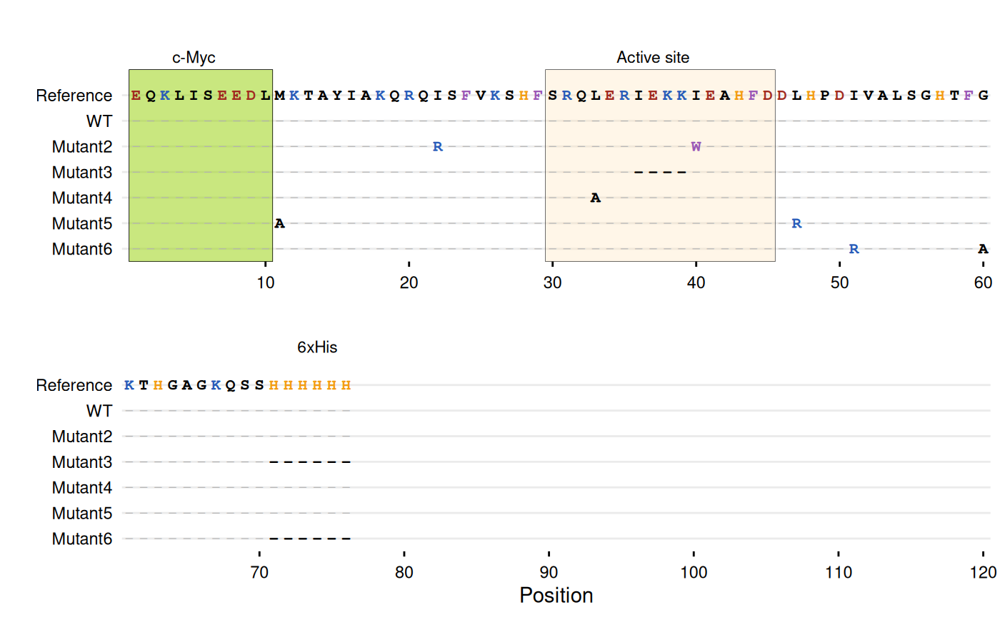
# Clean up
unlink(clustal_file)
# -----------------------------------------------------------------------
# Example with DNA sequences - gene structure with regulatory elements
# -----------------------------------------------------------------------
dna_ref <- paste0(
"TATAAA", # TATA box (promoter)
"ATGCGATCGATCGATCGTAGCTAGCT", # Exon 1
"GTAAGTATCGATCGAT", # Intron 1 (splice sites: GT...AG)
"ACGTACGTACGTAGCTAGCTAGCTAC", # Exon 2
"GTACGTACGTACGTAC", # Intron 2
"GTACGTACGTAGCTAGCTAGCTACGT", # Exon 3
"ACGTACGTAAATAA" # 3'UTR with poly-A signal
)
dna_df <- data.frame(
sequence = c(
dna_ref,
sub("TATAAA", "TATATA", dna_ref),
gsub("GTAAGT", "ATAAGT", dna_ref),
gsub("CGATAG", "CGATAA", dna_ref),
sub("ATG", "AAG", dna_ref),
gsub("AATAA$", "AACAA", dna_ref),
sub("GCGATCGATCGATCG", "GCGATCAATCGATCG", dna_ref),
gsub("ACGTACGTACGTAG", "ACGTACATACGTAG", dna_ref)
),
id = c("WT", "Promoter_mut", "Splice_donor",
"Splice_acceptor", "Start_codon", "PolyA_mut",
"Exon1_missense", "Exon2_frameshift")
)
# Highlight gene structure elements
gg_seqdiff(
data = dna_df,
ref = dna_ref,
name = "id",
color = c(G = "#4e8fb5", C = "#845cab"),
highlight = list(
"#FFE0B2" = 1:6, # TATA box (promoter)
"#C8E6C9" = c(7:32, 49:74, 91:116), # Exons
"#FFCCBC" = 117:130 # 3'UTR with poly-A
),
annotate = list(
list(label = "TATA", pos = 1, angle = 90),
list(label = "ATG", pos = 7, angle = 90, color = "red"),
list(label = "Exon1", pos = 19),
list(label = "GT", pos = 33, angle = 90, size = 2.5),
list(label = "GA", pos = 46, angle = 90, size = 2.5),
list(label = "Exon2", pos = 61),
list(label = "GT", pos = 75, angle = 90, size = 2.5),
list(label = "AC", pos = 89, angle = 90, size = 2.5),
list(label = "Exon3", pos = 103),
list(label = "AATAAA", pos = 125, angle = 90, color = "blue")
),
wrap = 80
)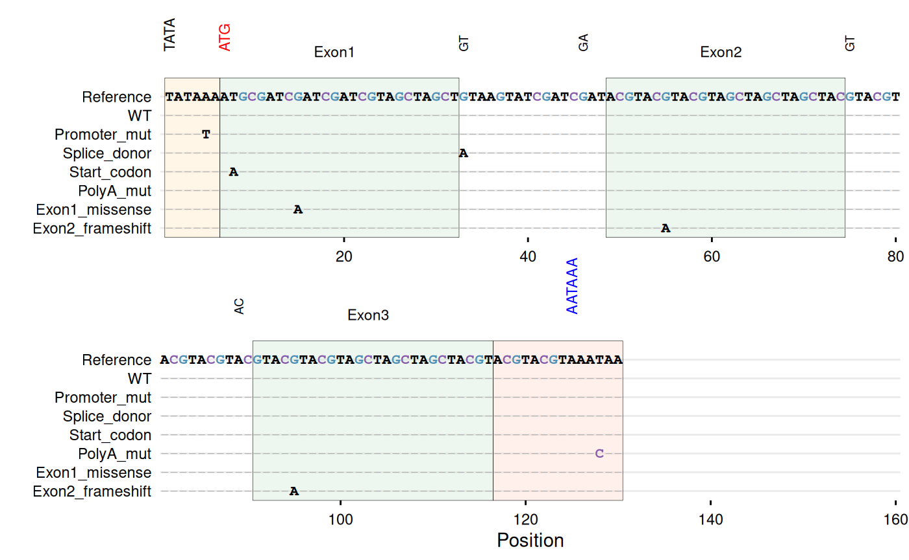
See ?gg_seqdiff for Clustal file support, residue
coloring, and annotation options.
Biodistribution Plots
gg_biodist() creates a barplot visualization of
biodistribution data (e.g., %ID/g across organs) with optional
separation of specific organs onto free
y-scales to prevent squishing of lower values. Points are
overlaid on bars and all facets are displayed in a single row.
bio_data <- data.frame(
id = paste0("sample_", 1:6),
condition = rep(c("Control", "Treated"), each = 3),
replicate = rep(1:3, times = 2),
Blood_val = c(4.8, 5.2, 4.5, 4.1, 4.3, 4.0),
Heart_val = c(1.9, 2.1, 2.0, 1.6, 1.8, 1.7),
Lung_val = c(3.5, 3.8, 3.2, 3.0, 3.1, 2.9),
Liver_val = c(14.2, 15.1, 13.8, 11.5, 12.0, 11.2),
Spleen_val = c(9.1, 8.7, 9.4, 7.2, 7.5, 7.0),
Kidney_val = c(125.0, 112.8, 121.9, 111.1, 102.4, 103.0),
Tumor_val = c(22.5, 24.1, 23.3, 28.2, 29.5, 27.8),
Muscle_val = c(0.7, 0.6, 0.8, 0.5, 0.4, 0.6),
Bone_val = c(1.4, 1.6, 1.5, 1.1, 1.2, 1.0)
)
head(bio_data)
#> id condition replicate Blood_val Heart_val Lung_val Liver_val
#> 1 sample_1 Control 1 4.8 1.9 3.5 14.2
#> 2 sample_2 Control 2 5.2 2.1 3.8 15.1
#> 3 sample_3 Control 3 4.5 2.0 3.2 13.8
#> 4 sample_4 Treated 1 4.1 1.6 3.0 11.5
#> 5 sample_5 Treated 2 4.3 1.8 3.1 12.0
#> 6 sample_6 Treated 3 4.0 1.7 2.9 11.2
#> Spleen_val Kidney_val Tumor_val Muscle_val Bone_val
#> 1 9.1 125.0 22.5 0.7 1.4
#> 2 8.7 112.8 24.1 0.6 1.6
#> 3 9.4 121.9 23.3 0.8 1.5
#> 4 7.2 111.1 28.2 0.5 1.1
#> 5 7.5 102.4 29.5 0.4 1.2
#> 6 7.0 103.0 27.8 0.6 1.0
# Base biodist plot
gg_biodist(bio_data, id = "organ",
value = "_val", group = "condition",
point_size = 1.25,
y_label = "%ID/g")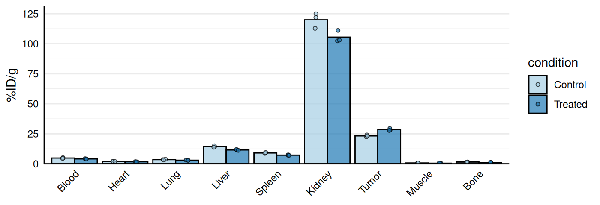
# Separate high uptake organs on separate axis
gg_biodist(bio_data, id = "organ",
value = "_val", group = "condition",
point_size = 1.25,
y_label = "%ID/g",
separate = c("Tumor", "Kidney"))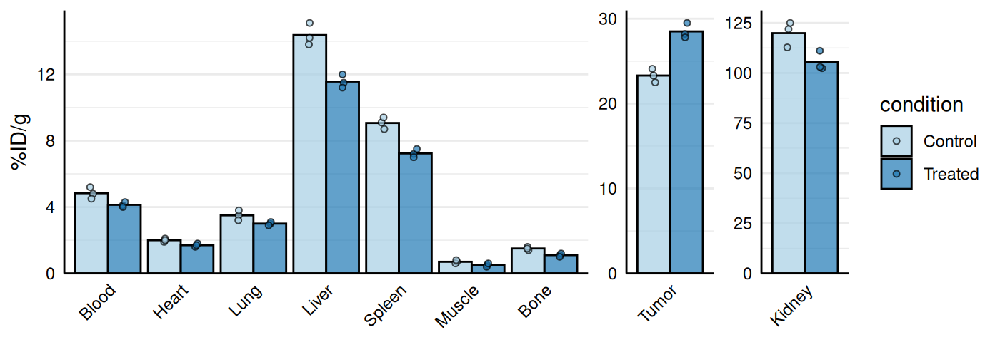
# Customization
gg_biodist(bio_data, id = "organ",
value = "_val", group = "condition",
point_size = 0, error_bars = TRUE,
fill_colors = c("#e41a1c", "#377eb8"),
y_label = "%ID/g",
separate = c("Tumor", "Kidney"))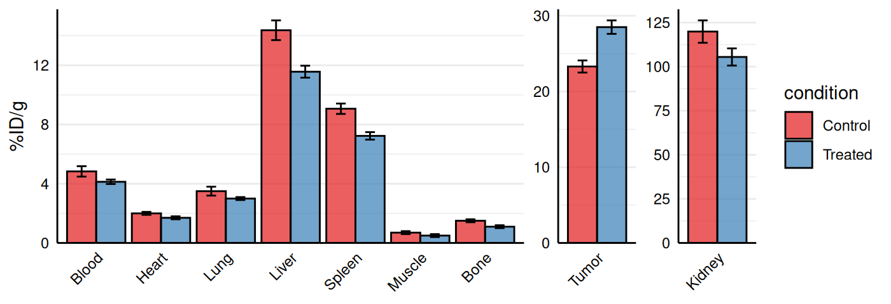
See ?gg_biodist for error bar options, summary statistic
choices, and color customization.
Chemoinformatics
Kinetic Rate Maps
Kinetic binding data from assays such as surface plasmon resonance
(SPR) or biolayer interferometry (BLI) are often summarized as
association (ka) and dissociation (kd) rate constants.
gg_kdmap() displays these measurements on a log-log
plot with kd on the x-axis and ka on the y-axis.
Diagonal iso-affinity contours indicate constant
equilibrium dissociation constants (KD = kd/ka), so points along the
same line share the same affinity. The function requires a data frame
with columns for association rate (ka, in
M⁻¹s⁻¹), dissociation rate (kd, in
s⁻¹), and an identifier for grouping replicates.
# Basic example: 5 variants with single measurements
kinetic_data <- data.frame(
id = c("WT", "Mut1", "Mut2", "Mut3", "Mut4"),
ka = c(1.2e5, 2.5e5, 2e5, 8.0e4, 1.8e5),
kd = c(1.5e-3, 2.0e-3, 1.5e-3, 1.2e-3, 1.8e-3)
)
gg_kdmap(data = kinetic_data, show_anno = TRUE)
#> `geom_line()`: Each group consists of only one observation.
#> ℹ Do you need to adjust the group aesthetic?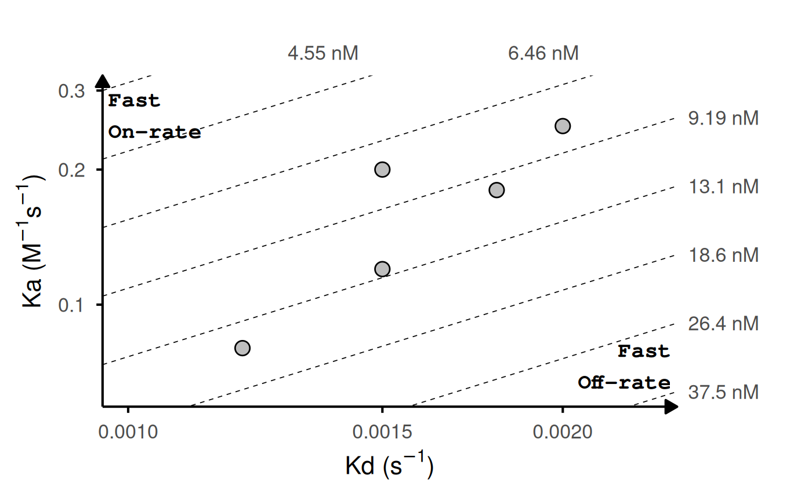
# With replicates: lines connect points with same ID
kinetic_rep <- data.frame(
id = c("WT", "WT", "WT", "Mut1", "Mut1", "Mut2", "Mut3", "Mut4"),
ka = c(1.2e5, 1.5e5, 1.1e5, 2.5e5, 2.4e5, 2e5, 8.0e4, 1.8e5),
kd = c(1.5e-3, 1.6e-3, 1.4e-3, 2.0e-3, 1.9e-3, 1.5e-3, 1.2e-3, 1.8e-3)
)
head(kinetic_rep)
#> id ka kd
#> 1 WT 120000 0.0015
#> 2 WT 150000 0.0016
#> 3 WT 110000 0.0014
#> 4 Mut1 250000 0.0020
#> 5 Mut1 240000 0.0019
#> 6 Mut2 200000 0.0015
gg_kdmap(data = kinetic_rep, show_anno = TRUE, fill = "id")
# Add labels and highlight reference
gg_kdmap(data = kinetic_rep, show_anno = TRUE, fill = "id")
# Customize iso-KD lines
gg_kdmap(data = kinetic_rep, show_anno = TRUE, fill = "id")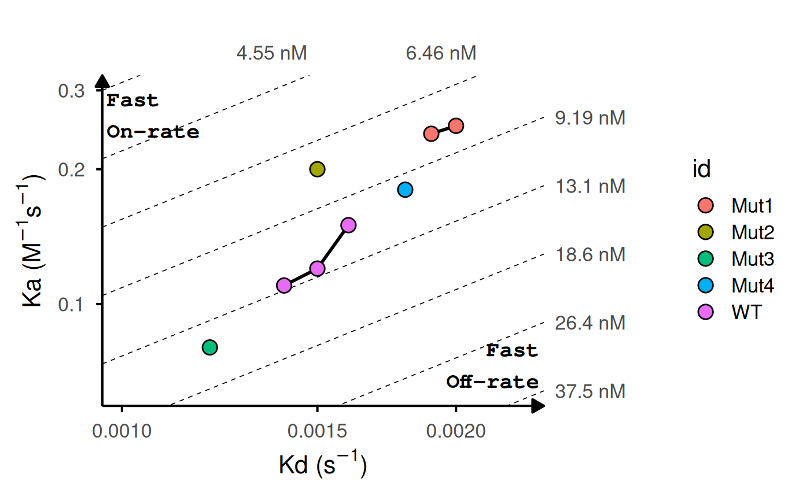
See ?gg_kdmap for replicate line options, reference
highlighting, label placement, and iso-KD line customization.
Further Customization
All functions return ggplot2 objects that can be further
modified using standard ggplot2 syntax (see
ggplot2::ggplot() and related documentation). Below is a
brief illustration using one of the functions; the same approach applies
to all other functions in this package.
library(ggplot2)
p <- gg_splitcorr(data = mtcars, split = "vs")
# Adjust legend
p + theme(legend.position = "bottom")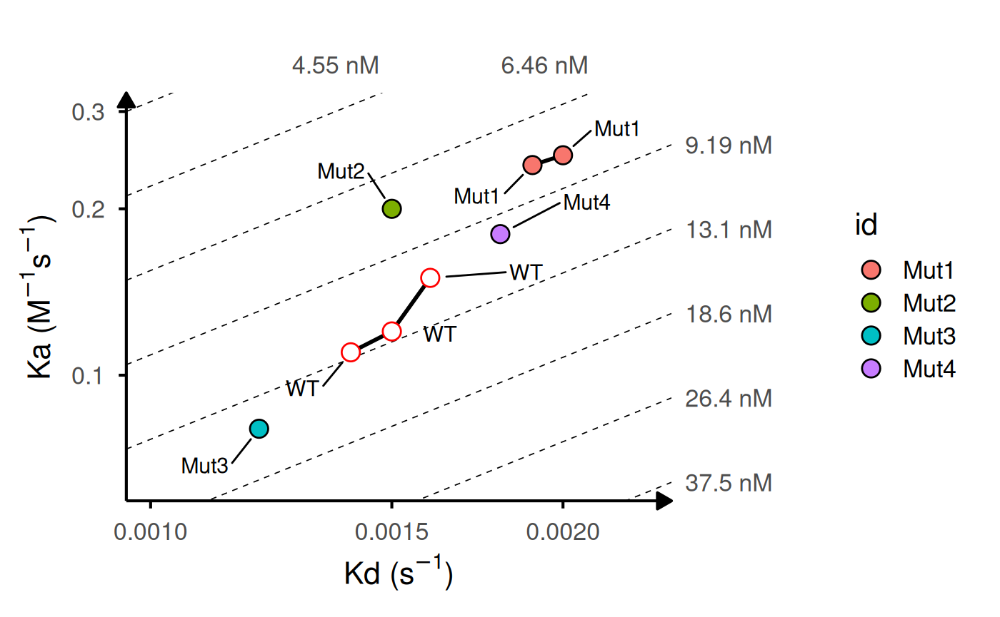
# Theme adjustments
p + theme(axis.text.x = element_text(angle = 90))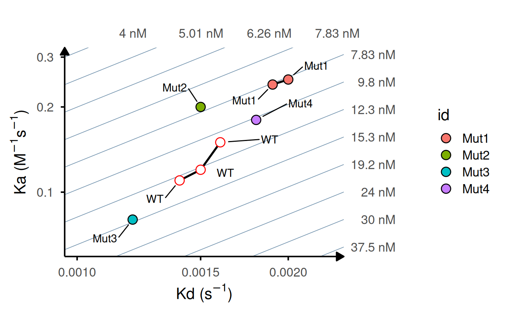
# Labels
p + labs(title = "Correlation comparison",
caption = "Data: mtcars") +
theme(plot.title = element_text(vjust = 3))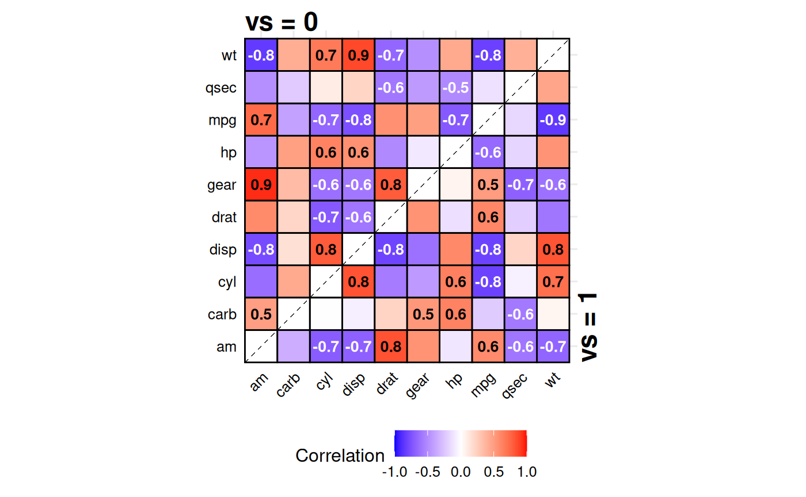
# Coordinate transformations
p + coord_fixed(ratio = 1.5)
#> Coordinate system already present.
#> ℹ Adding new coordinate system, which will replace the existing one.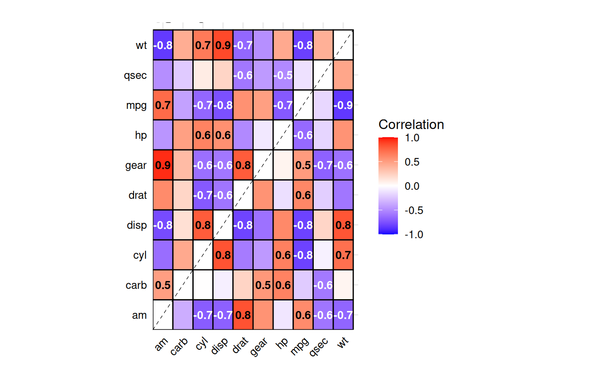
# Font adjustments
p + theme(text = element_text(family = "serif", size = 14))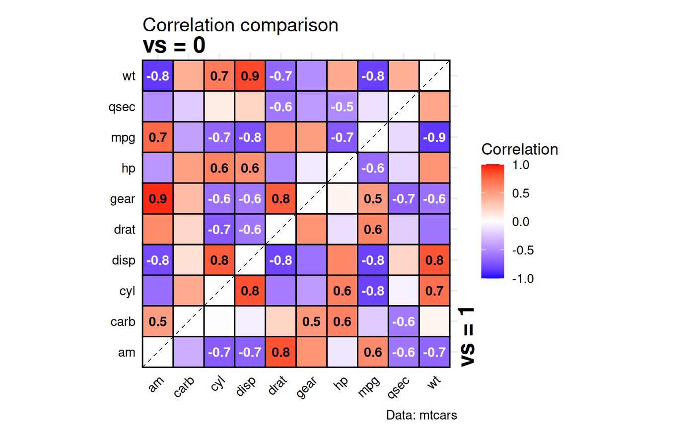